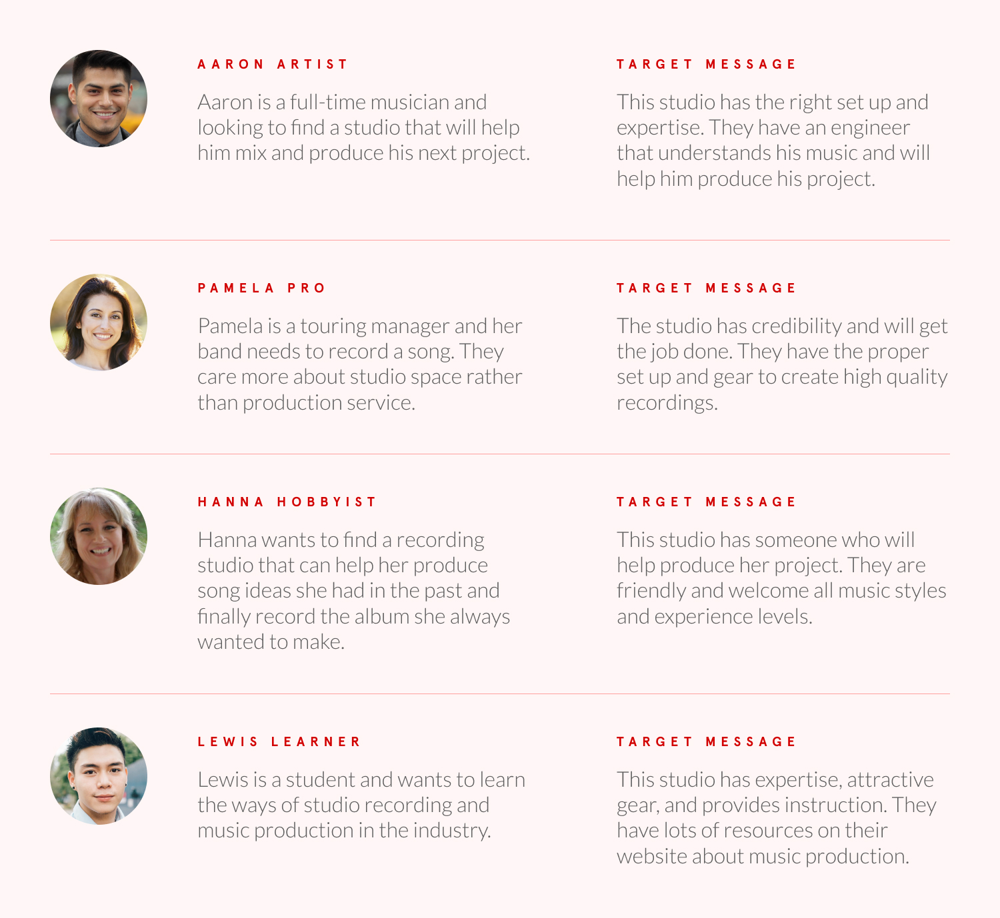
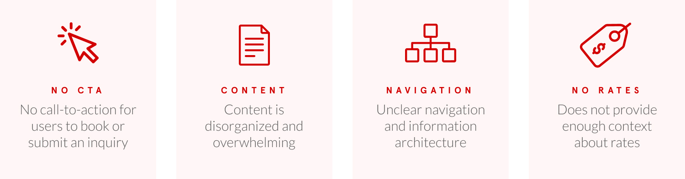
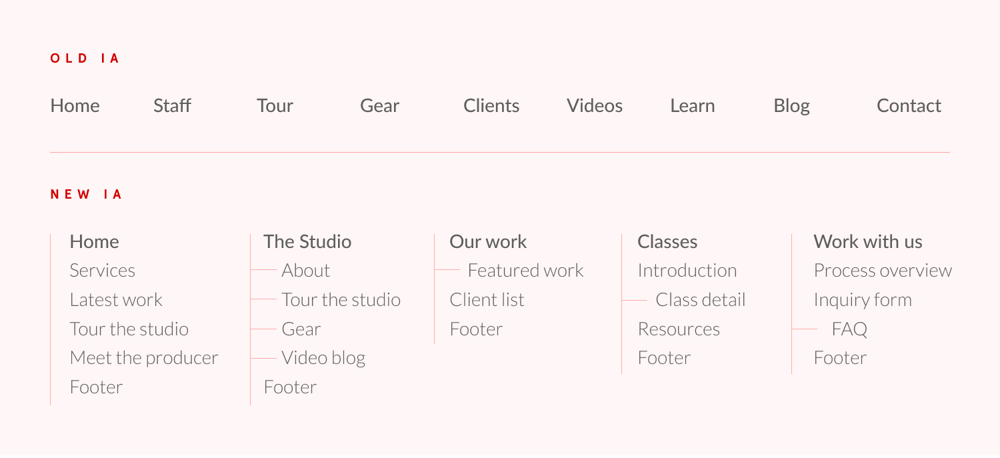
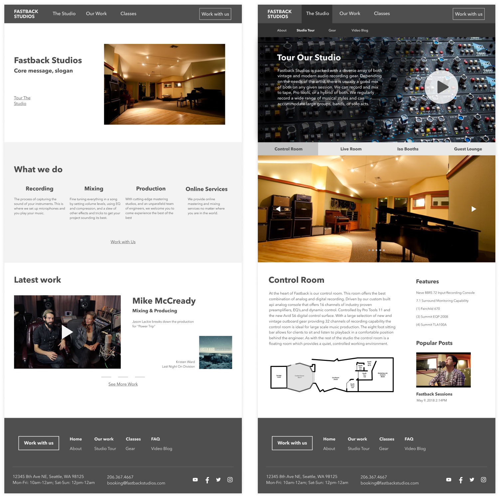
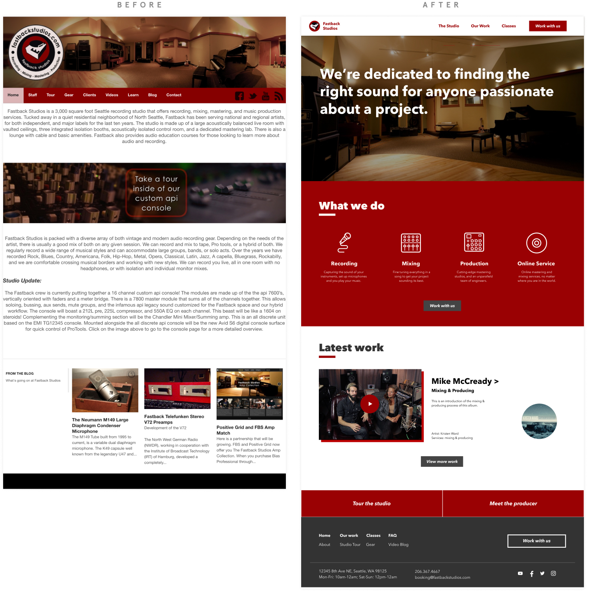
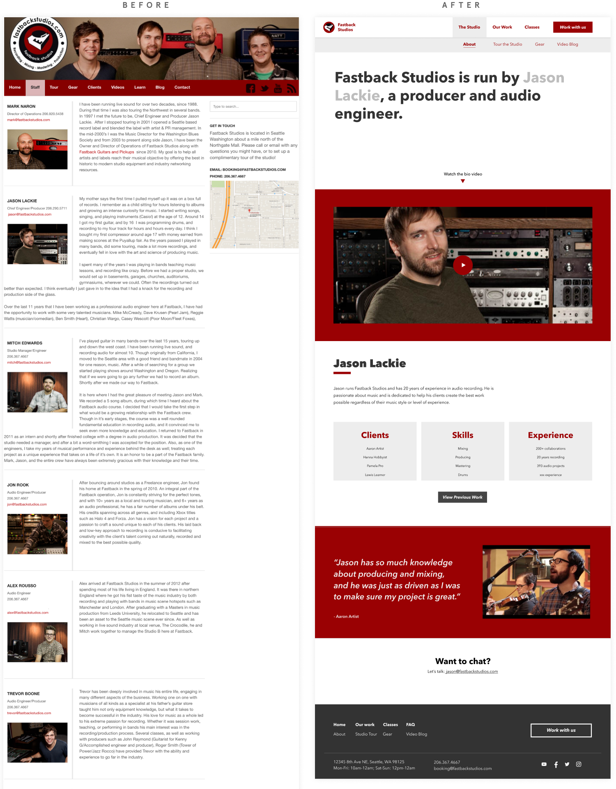
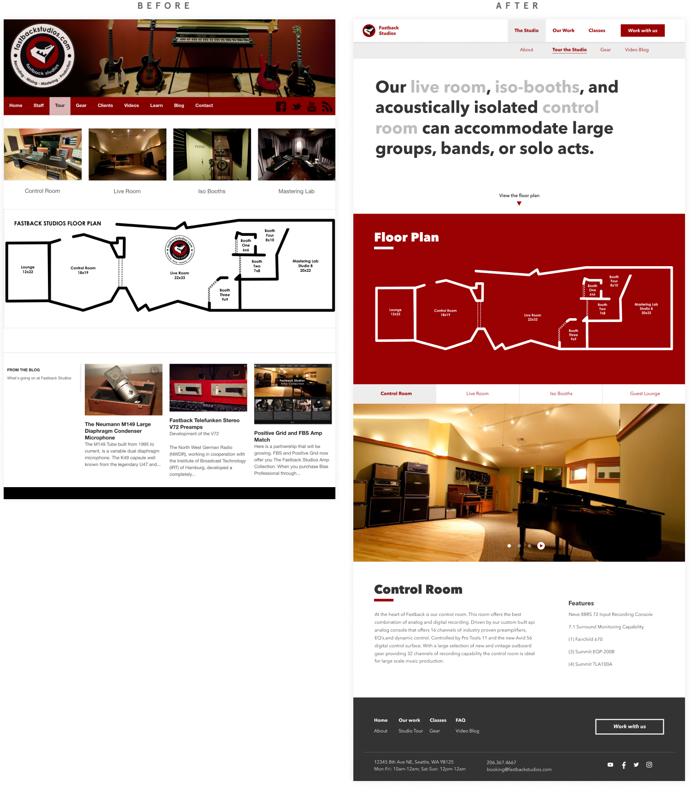
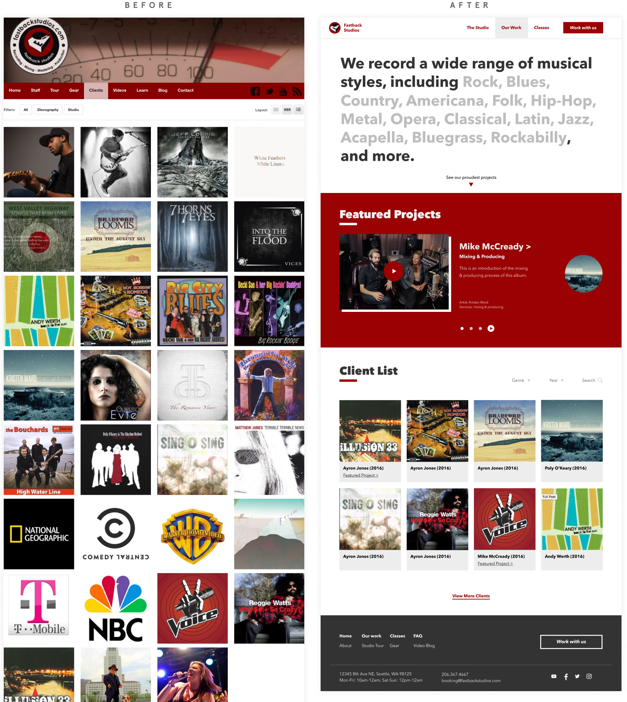
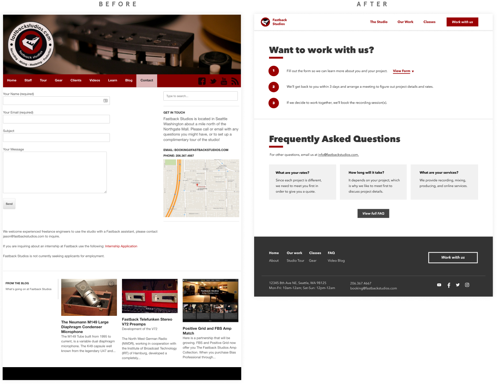

Fastback Studios
My Role
Survey, personas, wireframe, prototyping, user testing, visual design
Process
Surveys, interviews, competitive analysis, alignment personas, content audit, wireframe, prototyping, usability testing, visual design
Tools
Business goals
We interviewed our stakeholder to understand any frustrations from his perspective and what his business goals were. We identified 3 main business goals that could be incorporated into our redesign.
More inquiries
Increase serious inquiries that could lead to high quality, long term clients with specific focus on production projects
High quality clients
Decrease non-serious clients with the ability to filter clients
Inclusivity
Inclusively attract clients without alienating potential clients
UX Strategy
Based on our research and stakeholder interview, we created a UX strategy to meet the stakeholder's business goals using human-centered design.
1. CONTENT
Content such as past work and bios are crucial to help users learn more about the studio owner and decide if they want to work with him.
2. USABILITY
Better usability would mean less potential clients lost due to the inability to use the website to find contact information or rates.
3. VISUAL DESIGN
Visual design affects the studio's brand image. Creating the right visual brand would attract and invite more clients leading to more inquiries.
1. Content
We performed a content audit to make sure that existing content would be relevant to our user groups. To do that, we used our research and stakeholder interviews to create four main user groups and defined what message they are looking for on the website.
User groups
Content audit and brainstorm
After identifying the major user groups and their target messages, we brainstormed new content that would create the required messages each user group was looking for. We also sorted the existing content into the relevant group.
2.Usability
Through our interviews and user testing, we identified four major usability issues with the existing website.
INFORMATION ARCHITECTURE
We conducted a card sort to structure the website so that users can find the information they are looking for. The old IA did not make good use of the homepage, had a flat structure and unclear labels (e.g. videos, clients, learn). We consolidated the old and new content so that there was more hierarchy with less top-level pages.
Wireframe and Usability Testing
With our new IA, we designed a wireframe that followed our new content structure and fixed the existing usability issues. We used the wireframe to create a prototype for usability testing.
3. Visual Design
For our high fidelity design, we iterated on our wireframe and created a visual style. Fastback studio is inclusive, with the goal of attracting artists that desire to work with the studio owner for his unique production talent. We designed 4 visual concepts and decided on a direction that has artistic personality, yet is down-to-earth and inviting to people of all experience levels, backgrounds, and genres.
Homepage
We redesigned the homepage so that users can immediately understand what the studio does and get a sense of their previous work. We also created a simplified navigation bar with and added CTA "Work with us," so that it's easy to make an inquiry.
About
The about page now highlights Jason so that users can see his production skills. This will hopefully increase the number of inquiries that want to work with Jason specifically rather than any studio.
Studio Tour
The studio tour page has a better experience since users can switch easily between room descriptions, instead of having to click on a link to another page.
Our Work
One of our goals was to allow users to see previous work without risking alienating certain users with different music styles. We made sure to communicate that Fastback is very diverse and inclusive. We also added "Featured projects" - case studies for users to go more in depth into the work so we don't risk alienating them with certain types of music.
Inquiry Form
For our high fidelity design, we iterated on our wireframe and created a visual style.
Further Development
For next steps, we would create responsive layouts for different screen sizes, as well as test the website and iteratively improve the design.